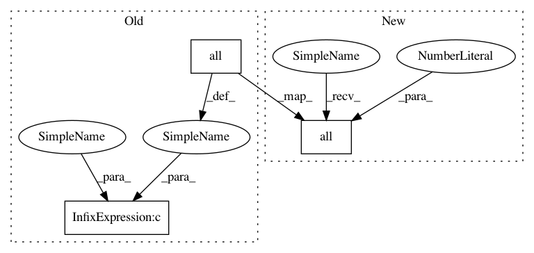

90d65897916d0caf6ce58c10f098b0c85759dc0d,kmodes.py,KPrototypes,_perform_clustering,#KPrototypes#,261
Before Change
if sum(self.membership[ik,:]) == 0:
while True:
rIndx = np.random.randint(nPoints)
if not all(Xnum[rIndx] == self.centroids[0]).any() and \
not all(Xcat[rIndx] == self.centroids[1]).any():
break
self._add_point_to_cluster(Xnum[rIndx], Xcat[rIndx], rIndx, ik)
fromCluster = np.argwhere(self.membership[:,rIndx])[0][0]
After Change
if sum(self.membership[ik,:]) == 0:
while True:
rIndx = np.random.randint(nPoints)
if not np.all(np.vstack((np.all(Xnum[rIndx] == self.centroids[0], axis=1), \
np.all(Xcat[rIndx] == self.centroids[1], axis=1))), \
axis=0).any():
break
In pattern: SUPERPATTERN
Frequency: 4
Non-data size: 3
Instances
Project Name: nicodv/kmodes
Commit Name: 90d65897916d0caf6ce58c10f098b0c85759dc0d
Time: 2013-08-16
Author: njdevos@gmail.com
File Name: kmodes.py
Class Name: KPrototypes
Method Name: _perform_clustering
Project Name: nicodv/kmodes
Commit Name: 21ef076316edd5c9be9766ad7c408b9488074d07
Time: 2013-08-16
Author: njdevos@gmail.com
File Name: kmodes.py
Class Name: KPrototypes
Method Name: _perform_clustering